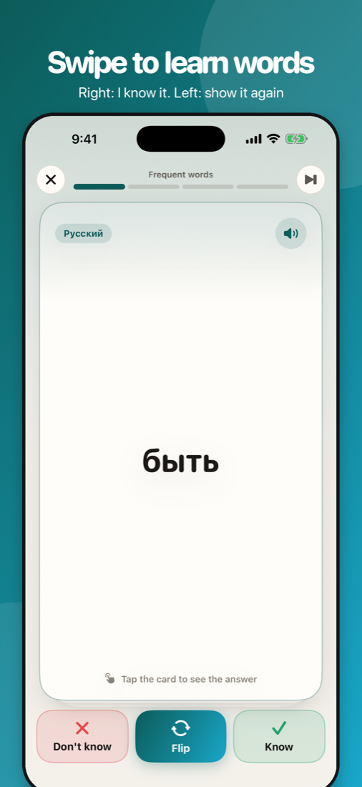
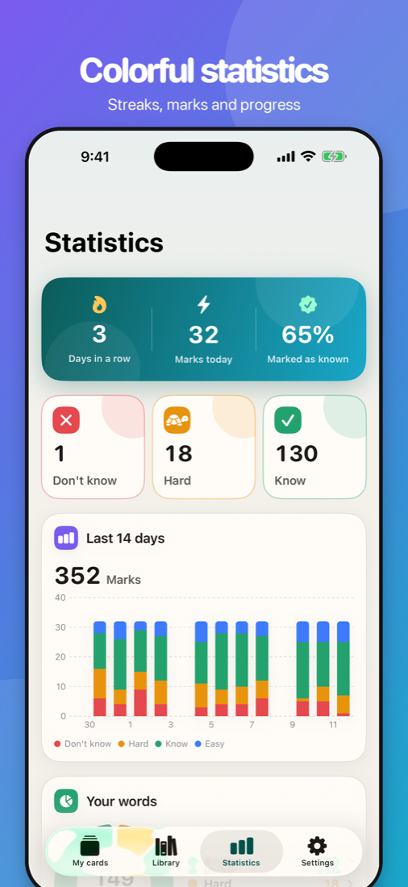
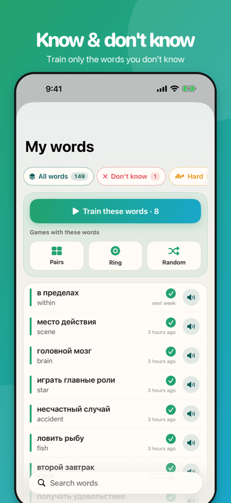
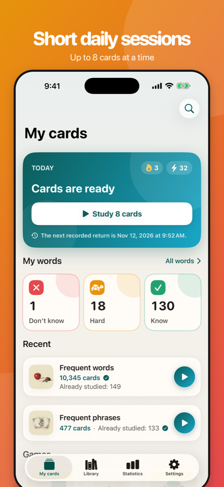
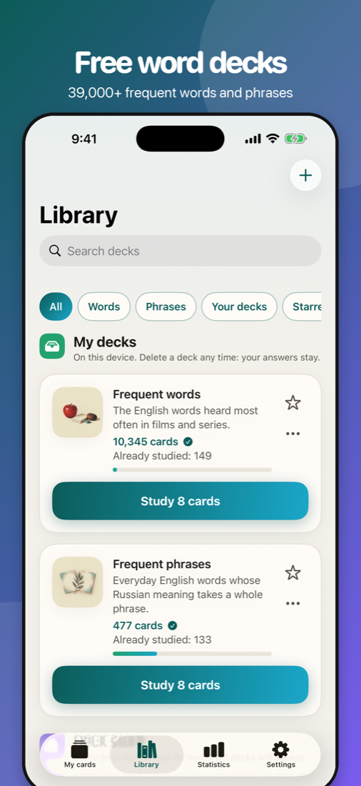

Learn words with a swipe.
One card fills the screen. Tap to flip. Swipe right — you know it. Swipe left — it comes back sooner. Cardavela turns English and Russian vocabulary into short, colorful sessions.
Download on the App Store
Why Cardavela
Flip and swipe
A 3D flip shows the answer with an example and native speech. Know / Hard / Don't know — three buttons or one swipe.
Know and don't know lists
Every word lands in Don't know, Hard or Know. Train only the words you don't know, or play Pairs and Ring with them.
Colorful statistics
Streaks, marks per day, words by list, returns for the week ahead and a 12-week study calendar.
Free word decks
Frequent English words and phrases from films and series with Russian meanings — over 39,000 pairs in both directions. A deck store with more decks is coming.
Your own decks
Type a card, import an Anki .apkg, or a simple TXT/CSV list: word — translation. Share your deck as one file.
Spaced repetition
FSRS scheduling brings each card back right before you'd forget it. Sessions are short: up to 8 cards.
Apple Watch
Study cards on your wrist with Know and Don't know. Answers sync to your iPhone automatically.
Screens




Questions
Is Cardavela free?
Yes. The app and all current decks are free. Paid decks may appear in the in-app deck store later; free decks stay free.
Do I need an account?
No. Your cards and answers stay on your device. You can export a personal backup file.
Which languages?
Cards are English ↔ Russian in both directions. The interface is in Russian, English, Hebrew, Spanish and Arabic.
Can I import my Anki deck?
Yes: legacy .apkg packages and plain TXT/CSV/TSV word lists. The schedule is not copied: Cardavela starts memory fresh.
Is the meaning checked?
The published pairs come from a frequency count of film and series subtitles. They are not a checked dictionary; the app marks this on the card.